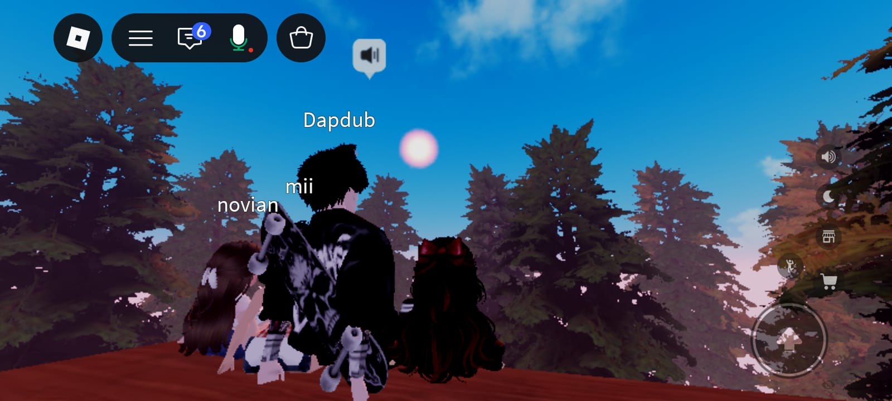
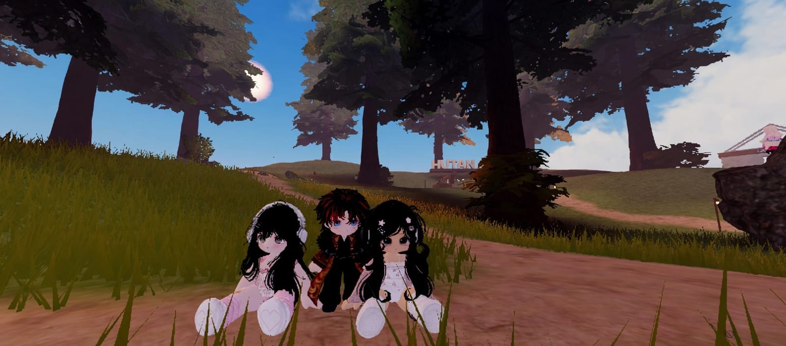
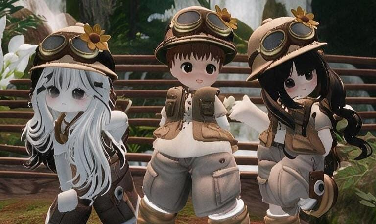
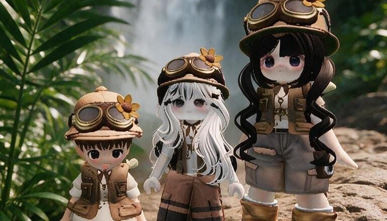
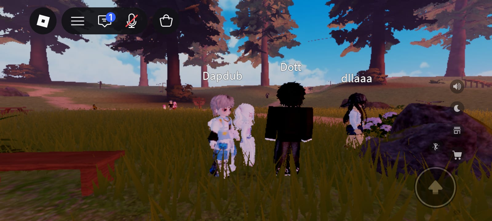
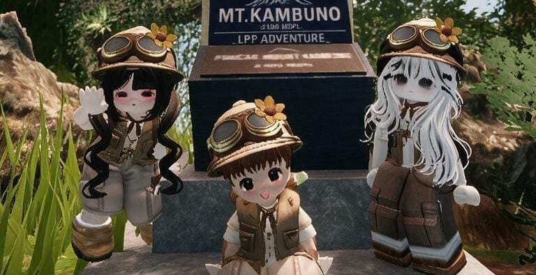
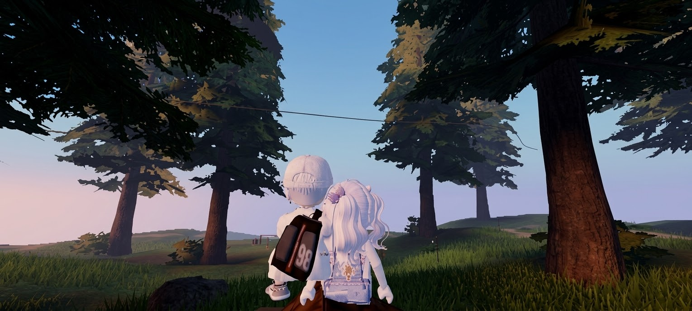

Ada satu cerita kecil yang pengen ade ceritain. Bukan tentang bagaimana semuanya berakhir sempurna, tapi tentang seseorang yang awalnya nggak pernah ade sangka akan menjadi sepenting itu.
Kalau dipikir-pikir, lucu juga ya...
dari sekian banyak orang yang bisa ade temui di dunia maya,
ade malah dipertemukan sama abang lewat sesuatu sesederhana itu, dan itu adalah di Roblox.
Awalnya mungkin nggak ada yang spesial.
Cuma main bareng, ngobrol, bercanda, saling ganggu,
lalu perlahan jadi terbiasa dengan keberadaan satu sama lain.
Sampai akhirnya, tanpa sadar,
ade mulai senang setiap kali ada abang.






Entah kapan tepatnya, hubungan kita berubah menjadi sesuatu
yang ade kenal sebagai abang dan adik.
Dan ade nyaman dengan itu.
abang uda jadi abang yang bisa ade ganggu,
ade ajak bercanda, ade ceritain banyak hal,
bahkan kadang jadi orang yang tanpa sadar ade cari keberadaannya.
Mungkin buat abang, ade cuma adik kecil yang suka bikin ribut.
Tapi buat ade, abang pernah menjadi salah satu orang
yang kehadirannya benar-benar berarti.
Tapi ternyata, rasa nyaman itu perlahan berubah.
Ade nggak tahu kapan tepatnya.
Ade juga nggak pernah benar-benar merencanakannya.
Tiba-tiba ade sadar kalau ade bukan cuma nyaman sebagai adik.
Ade suka sama abang.
Dan mungkin itu terdengar sederhana,
tapi buat ade nggak sesederhana itu.
Karena setelah sekian lama ade memilih sendiri
dan nggak membiarkan siapa pun masuk terlalu jauh,
ternyata abang adalah orang pertama yang berhasil
membuat ade merasakan itu lagi.
Abang bahkan membiarkan ade menjadi sedikit "cegil",
membiarkan ade mengganggu, menyukai,
dan menunjukkan perasaan ade dengan cara ade sendiri.
Dan untuk itu, ade benar-benar berterima kasih.
Tapi mungkin justru karena itu juga,
ade akhirnya sadar...
Ade sempat berpikir, mungkin kalau ade terus dekat, terus bercanda, terus menunjukkan rasa suka, suatu hari nanti semuanya bisa berubah.
Tapi semakin ade pikirkan, semakin ade sadar... mungkin bukan abang yang salah.
Bukan juga ade yang salah karena pernah suka.
Ade cuma menaruh harapan di tempat yang ternyata tidak bisa membalasnya.
Dan itu nggak apa-apa. Nggak semua perasaan harus berakhir dengan memiliki seseorang. Kadang kita cuma perlu mengakui bahwa kita pernah benar-benar menyukai seseorang, lalu belajar melepaskannya ketika waktunya tiba.
Jadi sebelum ade benar-benar belajar untuk berhenti berharap, ada satu hal yang paling ingin ade bilang:
Terima kasih
Terima kasih sudah hadir di hidup dde, meskipun awalnya cuma dari sebuah game.
Terima kasih untuk semua obrolan, candaan, waktu yang kita habiskan bareng, dan semua hal kecil yang mungkin buat abang biasa saja, tapi pernah berarti banyak buat dde
Terima kasih juga karena tanpa abang sadari, abang pernah membuat ade percaya kalau ternyata setelah dua tahun sendiri, hati ade masih bisa menyukai seseorang lagi.
Dan walaupun pada akhirnya perasaan itu nggak menemukan tempat yang sama di hatimu... ade tetap nggak menyesal pernah merasakannya.
Sekarang ade rasa ade sudah cukup lama tinggal di perasaan ini.
Jadi kali ini, ade mau belajar pergi sedikit demi sedikit.
Bukan pergi dari hidup abang. Bukan berhenti menjadi adik abang. Dan bukan berarti semua rasa sayang yang pernah ada tiba-tiba hilang.
Ade cuma mau berhenti menunggu sesuatu yang mungkin memang nggak akan datang.
Ade mau tetap bisa bercanda sama abang tanpa diam-diam berharap lebih.
Tetap bisa memanggilmu abang tanpa berharap suatu hari abang melihat dde dengan cara yang berbeda.
Ade mau menyayangimu sebagai abang, tanpa lagi meminta hati ade untuk menunggu.

Jadi, kalau suatu hari nanti ade sudah nggak se-cegil dulu...
kalau ade sudah nggak terlalu sering mengganggu...
kalau ade sudah bisa bercanda sama abang
tanpa menyimpan harapan lain di belakangnya...
Jangan berpikir kalau ade pernah menyesal mengenal abang. Dde justru bersyukur pernah bertemu dengan abang.
Dari Roblox yang awalnya cuma permainan, sampai akhirnya abang menjadi seseorang yang pernah menempati bagian kecil tapi berarti di hati dde.
Terima kasih ya, Bang.
Terima kasih sudah pernah menjadi seseorang yang ade suka.
Dan sekarang...
biarin ade belajar menyimpan rasa itu
sebagai sebuah cerita yang indah,
bukan lagi sebagai sebuah harapan.